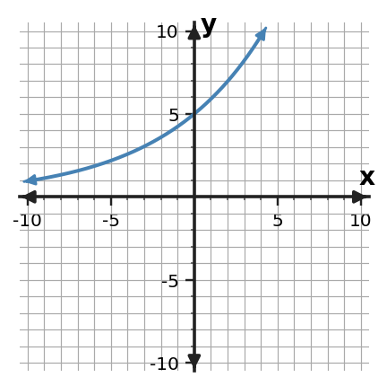

Algebra Extra Practice 7.3
1. For the basic exponential function $y=7(3)^x$, state the horizontal asymptote and describe whether the graph reaches it.
2. State the domain and range of $f(x)=6(4)^x$.
3. Use the graph to identify the $y$-intercept, describe the end behavior, and decide whether it shows exponential growth or decay.

4. A student graphs $y=6(1.33)^x$ and draws the curve crossing the x-axis at $x=4$. Assess the description and name the exponential-graph feature that decides the issue.
5. Graphs A and B have the same positive initial value, but one uses factor 1.5 and the other uses factor 2. Which graph grows faster for positive $x$? Explain how the graph supports your answer.

6. Describe what happens to $f(x)=3(\frac{2}{3})^x$ as $x$ becomes very large and as $x$ becomes very negative.
7. A medication amount is modeled by $A(t)=120(0.6)^t$. Describe the graph’s initial value and long-term behavior in the context.
8. For $f(x)=2(\frac{3}{2})^x$, complete a key-point table for $x=-1,0,1,2$. Use the points to describe the graph as growth or decay.
9. Make a small table of key points and sketch $y=8(\frac{4}{5})^x$. Label the $y$-intercept and horizontal asymptote.
10. Without graphing every point, identify the $y$-intercept of $f(x)=5(\frac{5}{3})^x$ and explain how you know.
11. For the basic exponential function $y=12(\frac{2}{5})^x$, state the horizontal asymptote and describe whether the graph reaches it.
12. State the domain and range of $f(x)=10(\frac{3}{4})^x$.
13. Use the graph to identify the $y$-intercept, describe the end behavior, and decide whether it shows exponential growth or decay.

14. A student graphs $y=2(1.5)^x$ with y-intercept $(0,2)$ and values increasing as x increases. Decide whether it is reasonable, citing the intercept/asymptote behavior that matters.
15. For positive $x$, the vertical gap between Graphs A and B increases. Explain what this tells you about their multiplicative factors.

16. Describe what happens to $f(x)=5(\frac{4}{5})^x$ as $x$ becomes very large and as $x$ becomes very negative.
17. A culture is modeled by $P(t)=25(1.2)^t$. Describe the graph’s initial value and long-term behavior in the context.
18. For $f(x)=5(\frac{5}{3})^x$, complete a key-point table for $x=-1,0,1,2$. Use the points to describe the graph as growth or decay.
19. Solve $x^2+10x+9=0$ by completing the square.
20. Rewrite $y=x^{2} + 6 x + 3$ in vertex form by completing the square, then state the vertex.
21. Solve $(x+2)^2=16$ by using the square-root step that appears after completing the square.
22. For $f(x)=(x+3)(x-4)$, find the zeros and state the corresponding $x$-intercepts.
23. A monic quadratic has zeros $x=0$ and $x=4$. Write the function in factored form and identify its $x$-intercepts.
24. The graph crosses the $x$-axis at $x=-5$ and $x=1$. Write a possible monic quadratic in factored form and explain how the factors encode the intercepts.